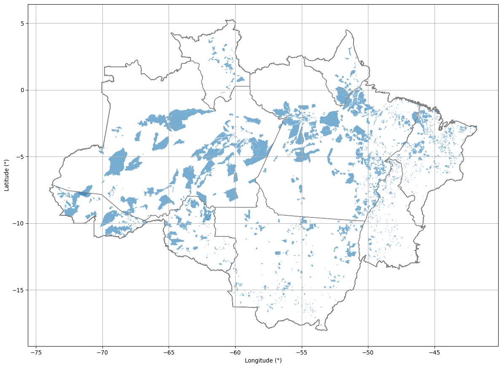
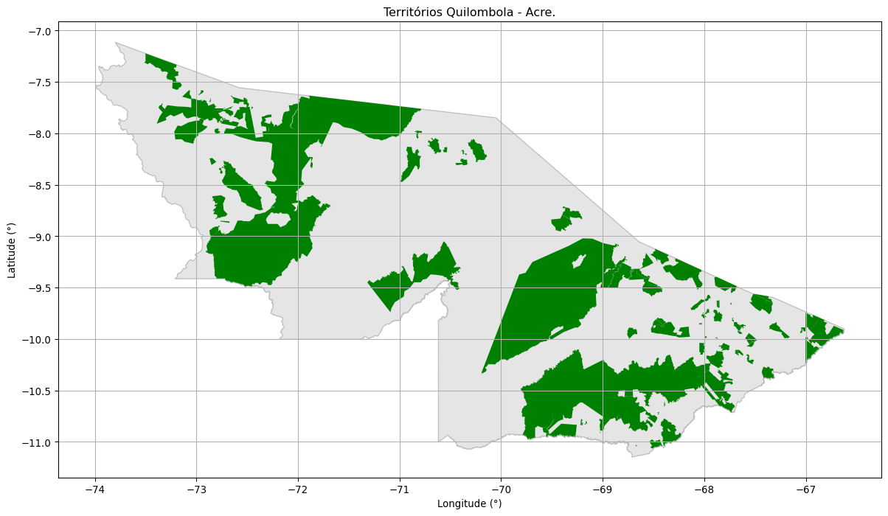
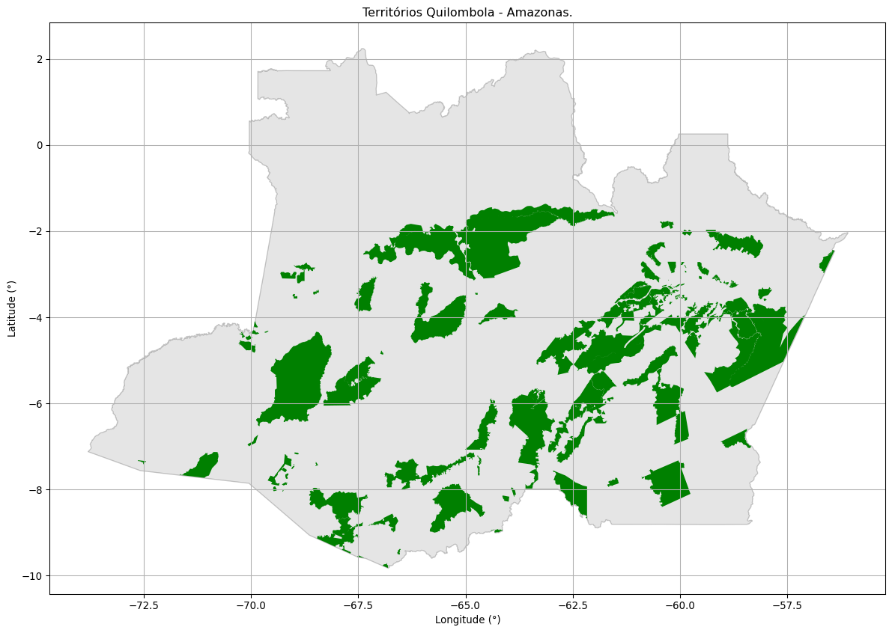
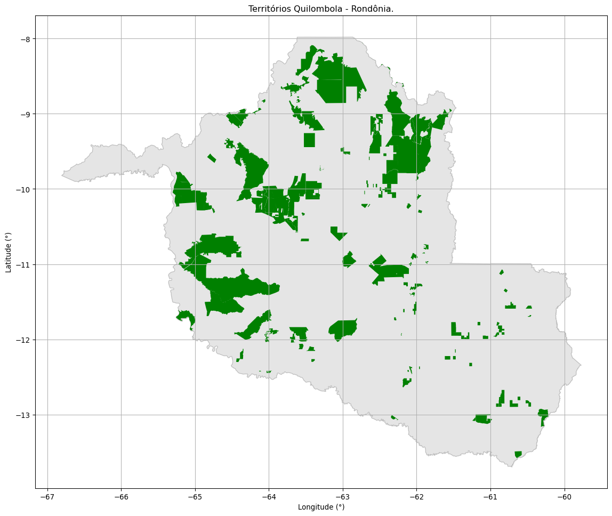
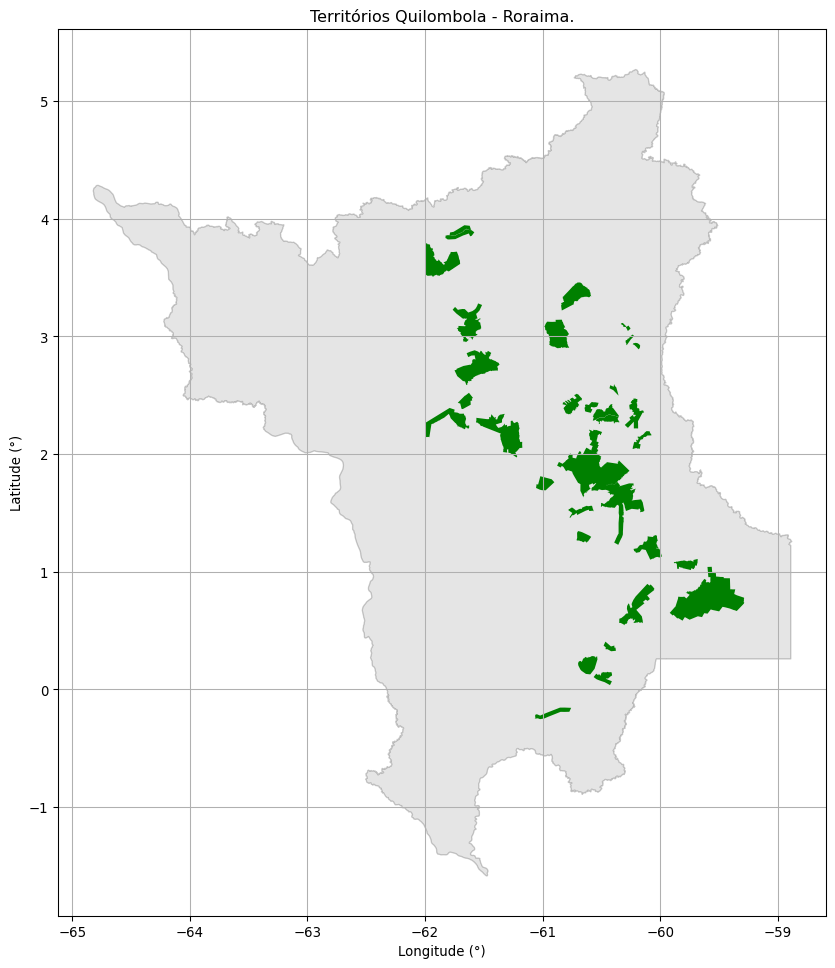
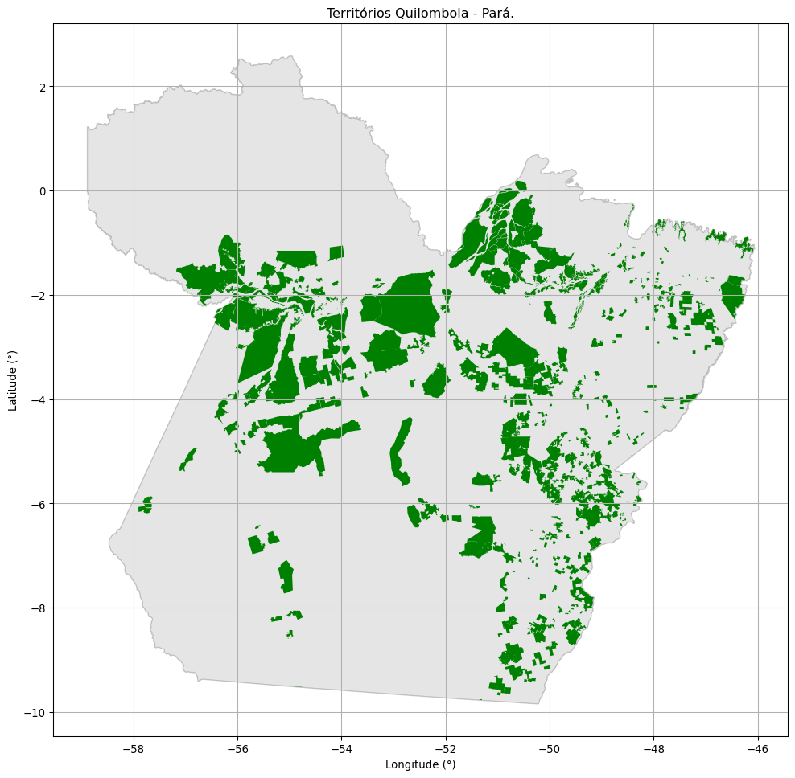
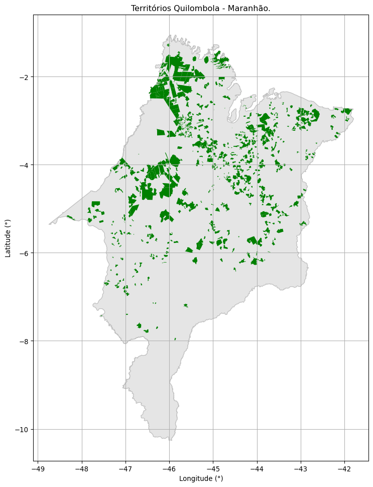
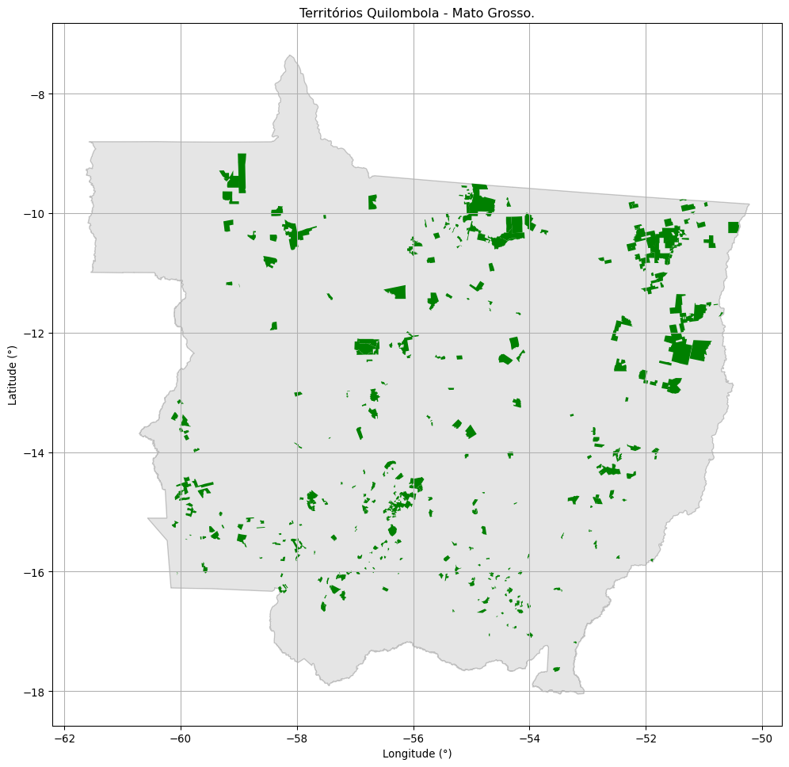

13 Projetos de Assentamento.
O assentamento de reforma agrária é um conjunto de unidades agrícolas, instaladas pelo Incra em um imóvel rural.
Cada uma dessas unidades, chamada de parcelas ou lotes, é destinada a uma família de agricultor ou trabalhador rural sem condições econômicas de adquirir um imóvel rural.
A família beneficiada deve residir e explorar o lote, com o desenvolvimento de atividades produtivas diversas.
A quantidade de lotes ou parcelas num assentamento é definida a partir de estudo de capacidade de geração de renda do imóvel. O estudo aponta a destinação agropecuária dos lotes, a quantidade de famílias assentadas, a viabilidade econômica da exploração, a disponibilidade de água e outras condições com impacto na capacidade produtiva.
O tamanho e a localização de cada lote são determinados pela geografia do terreno e pelas condições produtivas que o local oferece.
As habitações podem ser construídas em cada lote ou em área coletiva com instalação de uma agrovila.
O assentamento tem também áreas de uso comunitária e para construção de estruturas coletivas, como igrejas, centros comunitários, agroindústrias, escolas, unidades de saúde e áreas esportivas. Toda área de reforma agrária tem ainda locais de preservação ambiental, como reserva legal e área de proteção permanente.
Cada lote em assentamento é uma unidade familiar em seu respectivo município e demanda benefícios de todas as esferas de governo, como escolas (municipal e estadual), estradas (federal, estadual e municipal), créditos (federal e estadual), assistência técnica (federal, estadual e municipal), saúde (estadual e municipal) e outros.
Algumas dessas ações para o desenvolvimento e consolidação do assentamento são executadas por iniciativa e com recursos do Incra ou ainda por meio de parcerias com os governos locais e outras instituições públicas.
13.1 Quantificação dos projetos de assentamento por unidade da federação
13.2 Tabela Geral de Projetos de Assentamento
| Estado | Quantidade | Área (km²) | Percentual Área de Estudo |
|---|---|---|---|
| Acre | 171 | 48015.9693 | 0.9400 |
| Amazonas | 169 | 253451.8507 | 4.9900 |
| Rondônia | 255 | 33646.0946 | 0.6600 |
| Amapá | 49 | 17153.3913 | 0.3400 |
| Tocantins | 607 | 11370.8113 | 0.2200 |
| Roraima | 54 | 10401.7255 | 0.2000 |
| Pará | 1221 | 188682.6356 | 3.7100 |
| Maranhão | 952 | 35304.0555 | 0.6900 |
| Mato Grosso | 498 | 41200.8550 | 0.8100 |
13.3 A área de estudo contém 639.227,39 de quilômetros quadrados de Projetos de Assentamento correspondendo a 12.56%
13.4 Mapa de projetos de assentamento por unidade da federação
13.4.1 Quantida de área ocupada com Projetos de Assentamento - Acre: 48.015,97km² - 29,25% do estado.

13.4.2 Quantida de área ocupada com Projetos de Assentamento - Amazonas: 253.451,85km² - 16,25% do estado.

13.4.3 Quantida de área ocupada com Projetos de Assentamento - Rondônia: 33.646,09km² - 14,15% do estado.

13.4.4 Quantida de área ocupada com Projetos de Assentamento - Amapá: 17.153,39km² - 12,04% do estado.
13.4.5 Quantida de área ocupada com Projetos de Assentamento - Tocantins: 11.370,81km² - 4,10% do estado.
13.4.6 Quantida de área ocupada com Projetos de Assentamento - Roraima: 10.401,73km² - 4,65% do estado.

13.4.7 Quantida de área ocupada com Projetos de Assentamento - Pará: 188.682,64km² - 15,14% do estado.

13.4.8 Quantida de área ocupada com Projetos de Assentamento - Maranhão: 35.304,06km² - 10,71% do estado.

13.4.9 Quantida de área ocupada com Projetos de Assentamento - Mato Grosso: 41.200,86km² - 4,56% do estado.
